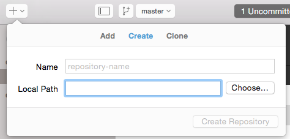
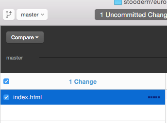
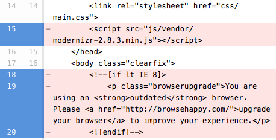
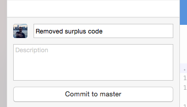
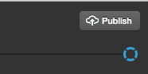
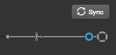
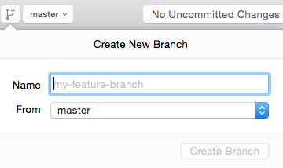
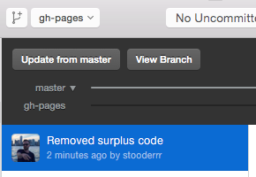

What did you learn last lesson?
Git workflow
Git is a version control system (VCS) that saves the state of your project's files and folders; basically, it takes a 'snapshot' of what all your files look like at a given moment and stores a reference to that 'snapshot'.
The lingo
-
Repository/Repo: a central location in which data - typically about a project - is stored and managed
-
Clone: download data/code from the cloud to your local machine (laptop, computer, etc.)
-
Commit: save a version of your project to git
-
Branch: create an additional track for the code that is separate from the 'master' branch. This allows you to work on a feature/issue without affecting the main code until your feature is finished.
Github
GitHub is a platform that makes it easy to manage git repositories. It provides a graphical interface to help you review and manage your code repos.
The files are hosted in the cloud so you can share the finished product with other people.
Why are git & GitHub valuable?
-
Stores a history of the code, which it allows developers to go back in time if something breaks.
-
Allows multiple developers to work on the same project.
-
GitHub tracks changes so you can see who worked on what (and who broke what).
-
GitHub allows for feedback to be given on the code, which hopefully, increases code quality.
Walkthrough
Firstly, be sure your project is named something meaningful. If your assignment code is still called 'starter_code', change it now to something like 'week-1-assignment' or 'portfolio-site'.
Creating your repo
Either click the 'Add' button and provide the path for your project folder. Or simply drag and drop your project folder onto the GitHub Desktop GUI!
Review files
Review the files that have been changed since your last commit.
Review code changes
If you want, you can review the code changes within each file.
Commit
When you commit your changes, you are creating a 'snapshot' of your code at that point in time. So be sure to write a meaningful commit message to help you find the correct 'snapshot' if you ever need to come back to this commit.
Publish/Sync
 Once you've committed your first changes, you can 'publish' your repo. This will push it up to Github.
Once your repo has been published, you'll then only be able to 'sync' your repo. Every time you sync after a commit, it will update the remote repo with your latest code.
Branching
Once your code has been pushed to your repo, you can create a new branch. For our purposes, the only branch we shall be creating is called 'gh-pages'.
This is a special GitHub branch, that will freely host your site online!
Change branches
Once you have created your 'gh-pages' branch, all that's left is to merge your code from the 'master' branch into your 'gh-pages' branch.
Select the dropdown at the very top and click on 'gh-pages'.
Merge code
Now in the select box at the top, you can see we are on the 'gh-pages' branch.
To merge the updates from master, simply click 'Update from master'...
...AND VOILÀ! You have now published your first website!